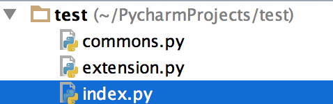

[TOC]
Pyhton中的函数
一、背景
在学习函数之前，一直遵循：面向过程编程，即：根据业务逻辑从上到下实现功能，其往往用一长段代码来实现指定功能，开发过程中最常见的操作就是粘贴复制，也就是将之前实现的代码块复制到现需功能处，如下：
1 | while True： |
定眼一看上述代码，if条件语句下的内容可以被提取出来公用，如下：
1 | def 吃(内容)： |
对于上述的两种实现方式，第二次必然比第一次的重用性和可读性要好，其实这就是函数式编程和面向过程编程的区别：
函数式：将某功能代码封装到函数中，日后便无需重复编写，仅调用函数即可
面向对象：对函数进行分类和封装，让开发“更快更好更强…”
函数式编程最重要的是增强代码的重用性和可读性
函数的定义
定义一个函数
你可以定义一个由自己想要功能的函数，以下是简单的规则：
• 函数代码块以 def 关键词开头，后接函数标识符名称和圆括号 ()。
• 任何传入参数和自变量必须放在圆括号中间，圆括号之间可以用于定义参数。
• 函数的第一行语句可以选择性地使用文档字符串—用于存放函数说明。
• 函数内容以冒号起始，并且缩进。
• return [表达式] 结束函数，选择性地返回一个值给调用方。不带表达式的return相当于返回 None。
语法
Python 定义函数使用 def 关键字，一般格式如下：
def 函数名（参数列表）:
函数体
默认情况下，参数值和参数名称是按函数声明中定义的的顺序匹配起来的。
实例
让我们使用函数来输出”Hello World！”：
1 | >>> def hello() : |
更复杂点的应用，函数中带上参数变量:
1 | #!/usr/bin/python3 |
三、函数调用
定义一个函数：给了函数一个名称，指定了函数里包含的参数，和代码块结构。
这个函数的基本结构完成以后，你可以通过另一个函数调用执行，也可以直接从 Python 命令提示符执行。
如下实例调用了 printme() 函数：
1 | #!/usr/bin/python3 |
四、参数传递
在 python 中，类型属于对象，变量是没有类型的：
1 | a=[1,2,3] |
以上代码中，[1,2,3] 是 List 类型，”百度” 是 String 类型，而变量 a 是没有类型，她仅仅是一个对象的引用（一个指针），可以是 List 类型对象，也可以指向 String 类型对象。可更改(mutable)与不可更改(immutable)对象
在 python 中，strings, tuples, 和 numbers 是不可更改的对象，而 list,dict 等则是可以修改的对象。
• 不可变类型：变量赋值 a=5 后再赋值 a=10，这里实际是新生成一个 int 值对象 10，再让 a 指向它，而 5 被丢弃，不是改变a的值，相当于新生成了a。
• 可变类型：变量赋值 la=[1,2,3,4] 后再赋值 la[2]=5 则是将 list la 的第三个元素值更改，本身la没有动，只是其内部的一部分值被修改了。
python 函数的参数传递：
• 不可变类型：类似 c++ 的值传递，如 整数、字符串、元组。如fun（a），传递的只是a的值，没有影响a对象本身。比如在 fun（a）内部修改 a 的值，只是修改另一个复制的对象，不会影响 a 本身。
• 可变类型：类似 c++ 的引用传递，如 列表，字典。如 fun（la），则是将 la 真正的传过去，修改后fun外部的la也会受影响
python 中一切都是对象，严格意义我们不能说值传递还是引用传递，我们应该说传不可变对象和传可变对象。
python 传不可变对象实例:
1 | #!/usr/bin/python3 |
实例中有 int 对象 2，指向它的变量是 b，在传递给 ChangeInt 函数时，按传值的方式复制了变量 b，a 和 b 都指向了同一个 Int 对象，在 a=10 时，则新生成一个 int 值对象 10，并让 a 指向它。
传可变对象实例
可变对象在函数里修改了参数，那么在调用这个函数的函数里，原始的参数也被改变了。例如：
1 | #!/usr/bin/python3 |
传入函数的和在末尾添加新内容的对象用的是同一个引用。故输出结果如下：
函数内取值: [10, 20, 30, [1, 2, 3, 4]]
函数外取值: [10, 20, 30, [1, 2, 3, 4]]
五、参数
以下是调用函数时可使用的正式参数类型：
• 必需参数
• 关键字参数
• 默认参数
• 不定长参数
必需参数
必需参数须以正确的顺序传入函数。调用时的数量必须和声明时的一样。
调用printme()函数，你必须传入一个参数，不然会出现语法错误：
1 | #!/usr/bin/python3 |
关键字参数
关键字参数和函数调用关系紧密，函数调用使用关键字参数来确定传入的参数值。
使用关键字参数允许函数调用时参数的顺序与声明时不一致，因为 Python 解释器能够用参数名匹配参数值。
以下实例在函数 printme() 调用时使用参数名：
1 | #!/usr/bin/python3 |
以下实例中演示了函数参数的使用不需要使用指定顺序：
1 | #!/usr/bin/python3 |
默认参数
调用函数时，如果没有传递参数，则会使用默认参数。以下实例中如果没有传入 age 参数，则使用默认值：
1 | #!/usr/bin/python3 |
不定长参数
你可能需要一个函数能处理比当初声明时更多的参数。这些参数叫做不定长参数，和上述2种参数不同，声明时不会命名。基本语法如下：
1 | def functionname([formal_args,] *var_args_tuple ): |
加了星号（*）的变量名会存放所有未命名的变量参数。如果在函数调用时没有指定参数，它就是一个空元组。我们也可以不向函数传递未命名的变量。如下实例：
1 | #!/usr/bin/python3 |
匿名函数
python 使用 lambda 来创建匿名函数。
所谓匿名，意即不再使用 def 语句这样标准的形式定义一个函数。
• lambda 只是一个表达式，函数体比 def 简单很多。
• lambda的主体是一个表达式，而不是一个代码块。仅仅能在lambda表达式中封装有限的逻辑进去。
• lambda 函数拥有自己的命名空间，且不能访问自有参数列表之外或全局命名空间里的参数。
• 虽然lambda函数看起来只能写一行，却不等同于C或C++的内联函数，后者的目的是调用小函数时不占用栈内存从而增加运行效率。
语法
lambda 函数的语法只包含一个语句，如下：
lambda [arg1 [,arg2,…..argn]]:expression
如下实例：
1 | #!/usr/bin/python3 |
return语句
return [表达式] 语句用于退出函数，选择性地向调用方返回一个表达式。不带参数值的return语句返回None。之前的例子都没有示范如何返回数值，以下实例演示了 return 语句的用法：
1 | #!/usr/bin/python3 |
变量作用域
Python 中，程序的变量并不是在哪个位置都可以访问的，访问权限决定于这个变量是在哪里赋值的。
变量的作用域决定了在哪一部分程序可以访问哪个特定的变量名称。Python的作用域一共有4中，分别是：
• L （Local） 局部作用域
• E （Enclosing） 闭包函数外的函数中
• G （Global） 全局作用域
• B （Built-in） 内建作用域
以 L –> E –> G –>B 的规则查找，即：在局部找不到，便会去局部外的局部找（例如闭包），再找不到就会去全局找，再者去内建中找。
1 | x = int(2.9) # 内建作用域 |
Python 中只有模块（module），类（class）以及函数（def、lambda）才会引入新的作用域，其它的代码块（如 if/elif/else/、try/except、for/while等）是不会引入新的作用域的，也就是说这这些语句内定义的变量，外部也可以访问，如下代码：
1 | >>> if True: |
实例中 msg 变量定义在 if 语句块中，但外部还是可以访问的。
如果将 msg 定义在函数中，则它就是局部变量，外部不能访问：
1 | >>> def test(): |
从报错的信息上看，说明了 msg_inner 未定义，无法使用，因为它是局部变量，只有在函数内可以使用。
全局变量和局部变量
定义在函数内部的变量拥有一个局部作用域，定义在函数外的拥有全局作用域。
局部变量只能在其被声明的函数内部访问，而全局变量可以在整个程序范围内访问。调用函数时，所有在函数内声明的变量名称都将被加入到作用域中。如下实例：
1 | #!/usr/bin/python3 |
global 和 nonlocal关键字
当内部作用域想修改外部作用域的变量时，就要用到global和nonlocal关键字了。
以下实例修改全局变量 num：
1 | #!/usr/bin/python3 |
如果要修改嵌套作用域（enclosing 作用域，外层非全局作用域）中的变量则需要 nonlocal 关键字了，如下实例：
1 | #!/usr/bin/python3 |
另外有一种特殊情况，假设下面这段代码被运行：
1 | #!/usr/bin/python3 |
错误信息为局部作用域引用错误，因为函数的内部使用外部作用域的变量时，这个变量是只读的，是不能修改。
Python中的面向对象
浅析面向对象编程
• 面向过程：根据业务逻辑从上到下写垒代码
• 函数式：将某功能代码封装到函数中，无需重复编写整个功能代码的实现，仅调用即可
• 面向对象：对函数进行封装，这样能够更快速的开发程序，减少了重复代码的重写过程
面向过程编程最易被初学者接受，其往往用一长段代码来实现指定功能，开发过程中最常见的操作就是粘贴复制，即：将之前实现的代码块复制到现需功能处
1 | while True： |
今天我们来学习一种新的编程方式：面向对象编程（Object Oriented Programming，OOP，面向对象程序设计）
• 1）解决小明买电脑的故事
第一种方式:
1)在网上查找资料
2)根据自己预算和需求定电脑的型号 MacBook 15 顶配 1W8
3)去市场找到苹果店各种店无法甄别真假 随便找了一家
4)找到业务员,业务员推荐了另外一款 配置更高价格便宜,也是苹果系统的 1W
5)砍价30分钟 付款9999
6)成交
回去之后发现各种问题
第二种方式 :
1)找一个靠谱的电脑高手
2)给钱交易
• 面向对象和面向过程都是解决问题的一种思路而已
• 买电脑的第一种方式: 强调的是步骤、过程、每一步都是自己亲自去实现的 这种解决问题的思路我们就叫做面向过程
• 买电脑的第二种方式: 强调的是电脑高手, 电脑高手是处理这件事的主角,对我们而言,我们并不必亲自实现整个步骤,只需要调用电脑高手就可以解决问题 这种解决问题的思路就 是面向对象
• 用面向对象的思维解决问题的重点 1)当遇到一个需求的时候不用自己去实现，如果自己一步步实现那就是面向过程 2)应该找一个专门做这个事的人来做 3)面向对象是基于面向过程的
• 2）解决吃啤酒鸭的问题
第一种方式（面向过程）:
1 | 1)养鸭子 |
第二种方式（面向对象）:
1 | 1)找个卖啤酒鸭的人 |
需要了解的定义性文字:
面向对象(object-oriented ;简称: OO) 至今还没有统一的概念 我这里把它定义为: 按人们 认识客观世界的系统思维方式,采用基于对象(实体) 的概念建立模型,模拟客观世界分析、设 计、实现软件的办法。
面向对象编程(Object Oriented Programming-OOP) 是一种解决软件复用的设计和编程方法。 这种方法把软件系统中相近相似的操作逻辑和操作 应用数据、状态,以类的型式描述出来,以对象实例的形式在软件系统中复用,以达到提高软件开发效率的作用。
类和对象
类和对象
面向对象编程的2个非常重要的概念：类和对象
对象是面向对象编程的核心，在使用对象的过程中，为了将具有共同特征和行为的一组对象抽象定义，提出了另外一个新的概念——类
类就相当于制造飞机时的图纸，用它来进行创建的飞机就相当于对象
- 类
人以类聚 物以群分。
具有相似内部状态和运动规律的实体的集合(或统称、抽象)。
具有相同属性和行为事物的统称
类是抽象的,在使用的时候通常会找到这个类的一个具体的存在,使用这个具体的存在。一个类可以找到多个对象 - 对象
某一个具体事物的存在 ,在现实世界中可以是看得见摸得着的。可以是直接使用的 - 类和对象之间的关系
- 练习：区分类和对象
奔驰汽车 类
奔驰smart 类
张三的那辆奔驰smart 对象
狗 类
大黄狗 类
李四家那只大黄狗 对象
水果 类
苹果 类
红苹果 类 红富士苹果 类
我嘴里吃了一半的苹果 对象
5.类的构成
类(Class) 由3个部分构成
•类的名称:类名
•类的属性:一组数据
•类的方法:允许对进行操作的方法 (行为)
<1> 举例：
1）人的类设计,只关心3样东西:
• 事物名称(类名):人(Person)
• 属性:身高(height)、年龄(age)
• 方法(行为/功能):跑(run)、打架(fight)
2）狗类的设计
• 类名:狗(Dog)
• 属性:品种 、毛色、性别、名字、 腿儿的数量
方法(行为/功能):叫 、跑、咬人、吃、摇尾巴
6.类的抽象
如何把日常生活中的事物抽象成程序中的类?
拥有相同(或者类似)属性和行为的对象都可以抽像出一个类
方法:一般名词都是类(名词提炼法)
<1> 坦克发射3颗炮弹轰掉了2架飞机
• 坦克–》可以抽象成 类
• 炮弹–》可以抽象成类
• 飞机-》可以抽象成类
<2> 小明在公车上牵着一条叼着热狗的狗
• 小明–》 人类
• 公车–》 交通工具类
• 热狗–》 食物类
• 狗–》 狗类
<3>【想一想】如下图中，有哪些类呢？
说明：
• 人
• 枪
• 子弹
• 手榴弹
• 刀子
• 箱子
Python面向对象
Python从设计之初就已经是一门面向对象的语言，正因为如此，在Python中创建一个类和对象是很容易的。本章节我们将详细介绍Python的面向对象编程。
如果你以前没有接触过面向对象的编程语言，那你可能需要先了解一些面向对象语言的一些基本特征，在头脑里头形成一个基本的面向对象的概念，这样有助于你更容易的学习Python的面向对象编程。
接下来我们先来简单的了解下面向对象的一些基本特征。
面向对象技术简介
• 类(Class): 用来描述具有相同的属性和方法的对象的集合。它定义了该集合中每个对象所共有的属性和方法。对象是类的实例。
• 类变量：类变量在整个实例化的对象中是公用的。类变量定义在类中且在函数体之外。类变量通常不作为实例变量使用。
• 数据成员：类变量或者实例变量用于处理类及其实例对象的相关的数据。
• 方法重写：如果从父类继承的方法不能满足子类的需求，可以对其进行改写，这个过程叫方法的覆盖（override），也称为方法的重写。
• 实例变量：定义在方法中的变量，只作用于当前实例的类。
• 继承：即一个派生类（derived class）继承基类（base class）的字段和方法。继承也允许把一个派生类的对象作为一个基类对象对待。例如，有这样一个设计：一个Dog类型的对象派生自Animal类，这是模拟”是一个（is-a）”关系（例图，Dog是一个Animal）。
• 实例化：创建一个类的实例，类的具体对象。
• 方法：类中定义的函数。
• 对象：通过类定义的数据结构实例。对象包括两个数据成员（类变量和实例变量）和方法。
和其它编程语言相比，Python 在尽可能不增加新的语法和语义的情况下加入了类机制。
Python中的类提供了面向对象编程的所有基本功能：类的继承机制允许多个基类，派生类可以覆盖基类中的任何方法，方法中可以调用基类中的同名方法。
对象可以包含任意数量和类型的数据。
类定义
语法格式如下：
1 | class ClassName: |
类实例化后，可以使用其属性，实际上，创建一个类之后，可以通过类名访问其属性。
类对象
类对象支持两种操作：属性引用和实例化。
属性引用使用和 Python 中所有的属性引用一样的标准语法：obj.name。
类对象创建后，类命名空间中所有的命名都是有效属性名。所以如果类定义是这样:
1 | #!/usr/bin/python3 |
很多类都倾向于将对象创建为有初始状态的。因此类可能会定义一个名为 __init__()的特殊方法（构造方法），像下面这样：
1 | def __init__(self): |
self代表类的实例，而非类
类的方法与普通的函数只有一个特别的区别——它们必须有一个额外的第一个参数名称, 按照惯例它的名称是 self。
1 | class Test: |
从执行结果可以很明显的看出，self 代表的是类的实例，代表当前对象的地址，而 self.class 则指向类。
self 不是 python 关键字，我们把他换成 baidu 也是可以正常执行的:
1 | class Test: |
类的方法
在类地内部，使用def关键字可以为类定义一个方法，与一般函数定义不同，类方法必须包含参数self,且为第一个参数:
1 | #!/usr/bin/python3 |
继承
Python 同样支持类的继承，如果一种语言不支持继承，类就没有什么意义。派生类的定义如下所示:
1 | class DerivedClassName(BaseClassName1): |
需要注意圆括号中基类的顺序，若是基类中有相同的方法名，而在子类使用时未指定，python从左至右搜索 即方法在子类中未找到时，从左到右查找基类中是否包含方法。
BaseClassName（示例中的基类名）必须与派生类定义在一个作用域内。除了类，还可以用表达式，基类定义在另一个模块中时这一点非常有用:
class DerivedClassName(modname.BaseClassName):
实例
1 | #!/usr/bin/python3 |
多继承
Python同样有限的支持多继承形式。多继承的类定义形如下例:
1 | class DerivedClassName(Base1, Base2, Base3): |
需要注意圆括号中父类的顺序，若是父类中有相同的方法名，而在子类使用时未指定，python从左至右搜索 即方法在子类中未找到时，从左到右查找父类中是否包含方法。
1 | #!/usr/bin/python3 |
方法重写
如果你的父类方法的功能不能满足你的需求，你可以在子类重写你父类的方法，实例如下：
1 | #!/usr/bin/python3 |
类属性与方法
类的私有属性private_attrs：两个下划线开头，声明该属性为私有，不能在类地外部被使用或直接访问。在类内部的方法中使用时 self.private_attrs。
类的方法在类地内部，使用def关键字可以为类定义一个方法，与一般函数定义不同，类方法必须包含参数self,且为第一个参数
类的私有方法private_method：两个下划线开头，声明该方法为私有方法，不能在类地外部调用。在类的内部调用 self.private_methods。
实例
类的私有属性实例如下：
1 | #!/usr/bin/python3 |
类的专有方法：
1 | __init__ : 构造函数，在生成对象时调用 |
运算符重载
Python同样支持运算符重载，我么可以对类的专有方法进行重载，实例如下：
1 | #!/usr/bin/python3 |
静态方法和类方法
静态方法和类方法
类方法
是类对象所拥有的方法，需要用修饰器@classmethod来标识其为类方法，对于类方法，第一个参数必须是类对象，一般以cls作为第一个参数（当然可以用其他名称的变量作为其第一个参数，但是大部分人都习惯以’cls’作为第一个参数的名字，就最好用’cls’了），能够通过实例对象和类对象去访问。
1 | class people: |
结果显示在用类方法对类属性修改之后，通过类对象和实例对象访问都发生了改变
2.静态方法
需要通过修饰器@staticmethod来进行修饰，静态方法不需要多定义参数
1 | class people: |
总结
从类方法和实例方法以及静态方法的定义形式就可以看出来，类方法的第一个参数是类对象cls，那么通过cls引用的必定是类对象的属性和方法；而实例方法的第一个参数是实例对象self，那么通过self引用的可能是类属性、也有可能是实例属性（这个需要具体分析），不过在存在相同名称的类属性和实例属性的情况下，实例属性优先级更高。静态方法中不需要额外定义参数，因此在静态方法中引用类属性的话，必须通过类对象来引用。
Python内置类属性
Python内置类属性__dict__ : 类的属性（包含一个字典，由类的数据属性组成）__doc__ :类的文档字符串__name__: 类名__module__: 类定义所在的模块（类的全名是__main__.className，如果类位于一个导入模块mymod中，那么className.__module__等于 mymod）__bases__ : 类的所有父类构成元素（包含了一个由所有父类组成的元组）
Super
python类的体系中如果出现了继承,子类如果没有写自己的初始化方法,会自动继承第一个父类的方法,所以我们需要自己写子类的初始化:如果像下面的代码:
1 | class A: |
会造成公共父类A被调用多次.
正确的办法是使用super,它会把当前的类返回一个父类的对象,注意你在体系中使用了super那么所有的地方都要使用super,否则可能造成父类多次被调用或者不能调用所有的父类方法(这是由super的机制造成的,具体实现不懂),super保证所有父类只会执行一次，而且修改代码时也很方便:
1 | class A(object): |
isinstance
语法：
isinstance（object，type）
作用：来判断一个对象是否是一个已知的类型。
其第一个参数（object）为对象，第二个参数（type）为类型名(int…)或类型名的一个列表((int,list,float)是一个列表)。其返回值为布尔型（True or flase）。
若对象的类型与参数二的类型相同则返回True。若参数二为一个元组，则若对象类型与元组中类型名之一相同即返回True。
下面是两个例子：
例一
1 | >>> a = 4 |
例二
1 | >>> a = "b" |
一、isinstance()
在Python中可以使用type()与isinstance()这两个函数判断对象类型，而isinstance()函数的使用上比type更加方便。
复制代码 代码如下:
1 | # coding=utf-8 |
执行结果：
复制代码 代码如下:
1 | True |
二、isinstance 和 type的区别
isinstance 和 type的区别在于：
复制代码 代码如下:
1 | class A: |
区别就是 对于subclass之类的 type就不行了，所以,强烈建议不要使用type判断对象类型。
多态
多态的概念是应用于Java和C#这一类强类型语言中，而Python崇尚“鸭子类型”。
所谓多态：定义时的类型和运行时的类型不一样，此时就成为多态
Python伪代码实现Java或C#的多态
1 | class F1: |
由于在Java或C#中定义函数参数时，必须指定参数的类型
为了让Func函数既可以执行S1对象的show方法，又可以执行S2对象的show方法，所以，定义了一个S1和S2类的父类
而实际传入的参数是：S1对象和S2对象
1 | def Func(F1 obj): |
Python “鸭子类型”
1 | class F1: |
File(文件) 方法
file 对象使用 open 函数来创建：
open函数，该函数用于文件处理:
操作文件时，一般需要经历如下步骤：
打开文件
操作文件
一、打开文件文件句柄 = open('文件路径', '模式')
打开文件时，需要指定文件路径和以何等方式打开文件，打开后，即可获取该文件句柄，日后通过此文件句柄对该文件操作。
打开文件的模式有：
1 | r ，只读模式【默认】 |
注：以b方式打开时，读取到的内容是字节类型，写入时也需要提供字节类型
二、操作文件
下表列出了 file 对象常用的函数：
| 序号 | 方法及描述 |
|---|---|
| 1 | file.close()关闭文件。关闭后文件不能再进行读写操作。 |
| 2 | file.flush()刷新文件内部缓冲，直接把内部缓冲区的数据立刻写入文件, 而不是被动的等待输出缓冲区写入。 |
| 3 | file.fileno()返回一个整型的文件描述符(file descriptor FD 整型), 可以用在如os模块的read方法等一些底层操作上。 |
| 4 | file.isatty()如果文件连接到一个终端设备返回 True，否则返回 False。 |
| 5 | file.next()返回文件下一行。 |
| 6 | file.read([size])从文件读取指定的字节数，如果未给定或为负则读取所有。 |
| 7 | file.readline([size])读取整行，包括 “\n” 字符。 |
| 8 | file.readlines([sizeint])读取所有行并返回列表，若给定sizeint>0，返回总和大约为sizeint字节的行, 实际读取值可能比 sizeint 较大, 因为需要填充缓冲区。 |
| 9 | file.seek(offset[, whence])设置文件当前位置 |
| 10 | file.tell()返回文件当前位置。 |
| 11 | file.truncate([size])截取文件，截取的字节通过size指定，默认为当前文件位置。 |
| 12 | file.write(str)将字符串写入文件，没有返回值。 |
| 13 | file.writelines(sequence)向文件写入一个序列字符串列表，如果需要换行则要自己加入每行的换行符。 |
三、管理上下文
为了避免打开文件后忘记关闭，可以通过管理上下文，即：
1 | with open('log','r') as f: |
如此方式，当with代码块执行完毕时，内部会自动关闭并释放文件资源。
在Python 2.7 及以后，with又支持同时对多个文件的上下文进行管理，即：
1 | with open('log1') as obj1, open('log2') as obj2: |
OS文件/目录方法
os 模块提供了非常丰富的方法用来处理文件和目录。常用的方法如下表所示：
| 序号 | 方法及描述 |
|---|---|
| 1 | os.access(path, mode)检验权限模式 |
| 2 | os.chdir(path)改变当前工作目录 |
| 3 | os.chflags(path, flags)设置路径的标记为数字标记。 |
| 4 | os.chmod(path, mode)更改权限 |
| 5 | os.chown(path, uid, gid)更改文件所有者 |
| 6 | os.chroot(path)改变当前进程的根目录 |
| 7 | os.close(fd)关闭文件描述符 fd |
| 8 | os.closerange(fd_low, fd_high)关闭所有文件描述符，从 fd_low (包含) 到 fd_high (不包含), 错误会忽略 |
| 9 | os.dup(fd)复制文件描述符 fd |
| 10 | os.dup2(fd, fd2)将一个文件描述符 fd 复制到另一个 fd2 |
| 11 | os.fchdir(fd)通过文件描述符改变当前工作目录 |
| 12 | os.fchmod(fd, mode)改变一个文件的访问权限，该文件由参数fd指定，参数mode是Unix下的文件访问权限。 |
| 13 | os.fchown(fd, uid, gid)修改一个文件的所有权，这个函数修改一个文件的用户ID和用户组ID，该文件由文件描述符fd指定。 |
| 14 | os.fdatasync(fd)强制将文件写入磁盘，该文件由文件描述符fd指定，但是不强制更新文件的状态信息。 |
| 15 | os.fdopen(fd[, mode[, bufsize]])通过文件描述符 fd 创建一个文件对象，并返回这个文件对象 |
| 16 | os.fpathconf(fd, name)返回一个打开的文件的系统配置信息。name为检索的系统配置的值，它也许是一个定义系统值的字符串，这些名字在很多标准中指定（POSIX.1, Unix 95, Unix 98, 和其它）。 |
| 17 | os.fstat(fd)返回文件描述符fd的状态，像stat()。 |
| 18 | os.fstatvfs(fd)返回包含文件描述符fd的文件的文件系统的信息，像 statvfs() |
| 19 | os.fsync(fd)强制将文件描述符为fd的文件写入硬盘。 |
| 20 | os.ftruncate(fd, length)裁剪文件描述符fd对应的文件, 所以它最大不能超过文件大小。 |
| 21 | os.getcwd()返回当前工作目录 |
| 22 | os.getcwdu()返回一个当前工作目录的Unicode对象 |
| 23 | os.isatty(fd)如果文件描述符fd是打开的，同时与tty(-like)设备相连，则返回true, 否则False。 |
| 24 | os.lchflags(path, flags)设置路径的标记为数字标记，类似 chflags()，但是没有软链接 |
| 25 | os.lchmod(path, mode)修改连接文件权限 |
| 26 | os.lchown(path, uid, gid)更改文件所有者，类似 chown，但是不追踪链接。 |
| 27 | os.link(src, dst)创建硬链接，名为参数 dst，指向参数 src |
| 28 | os.listdir(path)返回path指定的文件夹包含的文件或文件夹的名字的列表。 |
| 29 | os.lseek(fd, pos, how)设置文件描述符 fd当前位置为pos, how方式修改: SEEK_SET 或者 0 设置从文件开始的计算的pos; SEEK_CUR或者 1 则从当前位置计算; os.SEEK_END或者2则从文件尾部开始. 在unix，Windows中有效 |
| 30 | os.lstat(path)像stat(),但是没有软链接 |
| 31 | os.major(device)从原始的设备号中提取设备major号码 (使用stat中的st_dev或者st_rdev field)。 |
| 32 | os.makedev(major, minor)以major和minor设备号组成一个原始设备号 |
| 33 | os.makedirs(path[, mode])递归文件夹创建函数。像mkdir(), 但创建的所有intermediate-level文件夹需要包含子文件夹。 |
| 34 | os.minor(device)从原始的设备号中提取设备minor号码 (使用stat中的st_dev或者st_rdev field )。 |
| 35 | os.mkdir(path[, mode])以数字mode的mode创建一个名为path的文件夹.默认的 mode 是 0777 (八进制)。 |
| 36 | os.mkfifo(path[, mode])创建命名管道，mode 为数字，默认为 0666 (八进制) |
| 37 | os.mknod(filename[, mode=0600, device])创建一个名为filename文件系统节点（文件，设备特别文件或者命名pipe）。 |
| 38 | os.open(file, flags[, mode])打开一个文件，并且设置需要的打开选项，mode参数是可选的 |
| 39 | os.openpty()打开一个新的伪终端对。返回 pty 和 tty的文件描述符。 |
| 40 | os.pathconf(path, name)返回相关文件的系统配置信息。 |
| 41 | os.pipe()创建一个管道. 返回一对文件描述符(r, w) 分别为读和写 |
| 42 | os.popen(command[, mode[, bufsize]])从一个 command 打开一个管道 |
| 43 | os.read(fd, n)从文件描述符 fd 中读取最多 n 个字节，返回包含读取字节的字符串，文件描述符 fd对应文件已达到结尾, 返回一个空字符串。 |
| 44 | os.readlink(path)返回软链接所指向的文件 |
| 45 | os.remove(path)删除路径为path的文件。如果path 是一个文件夹，将抛出OSError; 查看下面的rmdir()删除一个 directory。 |
| 46 | os.removedirs(path)递归删除目录。 |
| 47 | os.rename(src, dst)重命名文件或目录，从 src 到 dst |
| 48 | os.renames(old, new)递归地对目录进行更名，也可以对文件进行更名。 |
| 49 | os.rmdir(path)删除path指定的空目录，如果目录非空，则抛出一个OSError异常。 |
| 50 | os.stat(path)获取path指定的路径的信息，功能等同于C API中的stat()系统调用。 |
| 51 | os.stat_float_times([newvalue])决定stat_result是否以float对象显示时间戳 |
| 52 | os.statvfs(path)获取指定路径的文件系统统计信息 |
| 53 | os.symlink(src, dst)创建一个软链接 |
| 54 | os.tcgetpgrp(fd)返回与终端fd（一个由os.open()返回的打开的文件描述符）关联的进程组 |
| 55 | os.tcsetpgrp(fd, pg)设置与终端fd（一个由os.open()返回的打开的文件描述符）关联的进程组为pg。 |
| 56 | os.tempnam([dir[, prefix]])返回唯一的路径名用于创建临时文件。 |
| 57 | os.tmpfile()返回一个打开的模式为(w+b)的文件对象 .这文件对象没有文件夹入口，没有文件描述符，将会自动删除。 |
| 58 | os.tmpnam()为创建一个临时文件返回一个唯一的路径 |
| 59 | os.ttyname(fd)返回一个字符串，它表示与文件描述符fd 关联的终端设备。如果fd 没有与终端设备关联，则引发一个异常。 |
| 60 | os.unlink(path)删除文件路径 |
| 61 | os.utime(path, times)返回指定的path文件的访问和修改的时间。 |
| 62 | os.walk(top[, topdown=True[, onerror=None[, followlinks=False]]])输出在文件夹中的文件名通过在树中游走，向上或者向下。 |
| 63 | os.write(fd, str)写入字符串到文件描述符 fd中. 返回实际写入的字符串长度 |
异常信息
作为Python初学者，在刚学习Python编程时，经常会看到一些报错信息，在前面我们没有提及，这章节我们会专门介绍。
Python有两种错误很容易辨认：语法错误和异常。
语法错误
Python 的语法错误或者称之为解析错，是初学者经常碰到的，如下实例
1 | >>> while True print('Hello world') |
这个例子中，函数 print() 被检查到有错误，是它前面缺少了一个冒号（:）。
语法分析器指出了出错的一行，并且在最先找到的错误的位置标记了一个小小的箭头。
异常
即便Python程序的语法是正确的，在运行它的时候，也有可能发生错误。运行期检测到的错误被称为异常。
大多数的异常都不会被程序处理，都以错误信息的形式展现在这里:
1 | >>> 10 * (1/0) |
异常以不同的类型出现，这些类型都作为信息的一部分打印出来: 例子中的类型有ZeroDivisionError，NameError和 TypeError。
错误信息的前面部分显示了异常发生的上下文，并以调用栈的形式显示具体信息。
异常处理
以下例子中，让用户输入一个合法的整数，但是允许用户中断这个程序（使用 Control-C 或者操作系统提供的方法）。用户中断的信息会引发一个 KeyboardInterrupt 异常。
1 | >>> while True: |
try语句按照如下方式工作；
• 首先，执行try子句（在关键字try和关键字except之间的语句）
• 如果没有异常发生，忽略except子句，try子句执行后结束。
• 如果在执行try子句的过程中发生了异常，那么try子句余下的部分将被忽略。如果异常的类型和 except 之后的名称相符，那么对应的except子句将被执行。最后执行 try 语句之后的代码。
• 如果一个异常没有与任何的except匹配，那么这个异常将会传递给上层的try中。
一个 try 语句可能包含多个except子句，分别来处理不同的特定的异常。最多只有一个分支会被执行。
处理程序将只针对对应的try子句中的异常进行处理，而不是其他的 try 的处理程序中的异常。
一个except子句可以同时处理多个异常，这些异常将被放在一个括号里成为一个元组，例如:
1 | except (RuntimeError, TypeError, NameError): |
最后一个except子句可以忽略异常的名称，它将被当作通配符使用。你可以使用这种方法打印一个错误信息，然后再次把异常抛出。
1 | import sys |
使用 else 子句比把所有的语句都放在 try 子句里面要好，这样可以避免一些意想不到的、而except又没有捕获的异常。
异常处理并不仅仅处理那些直接发生在try子句中的异常，而且还能处理子句中调用的函数（甚至间接调用的函数）里抛出的异常。例如:
1 | >>> def this_fails(): |
抛出异常
Python 使用 raise 语句抛出一个指定的异常。例如:
1 | >>> raise NameError('HiThere') |
raise 唯一的一个参数指定了要被抛出的异常。它必须是一个异常的实例或者是异常的类（也就是 Exception 的子类）。
如果你只想知道这是否抛出了一个异常，并不想去处理它，那么一个简单的 raise 语句就可以再次把它抛出。
1 | >>> try: |
用户自定义异常
你可以通过创建一个新的exception类来拥有自己的异常。异常应该继承自 Exception 类，或者直接继承，或者间接继承，例如:
1 | >>> class MyError(Exception): |
在这个例子中，类 Exception默认的 __init__()被覆盖。
异常的类可以像其他的类一样做任何事情，但是通常都会比较简单，只提供一些错误相关的属性，并且允许处理异常的代码方便的获取这些信息。
当创建一个模块有可能抛出多种不同的异常时，一种通常的做法是为这个包建立一个基础异常类，然后基于这个基础类为不同的错误情况创建不同的子类:
1 | class Error(Exception): |
大多数的异常的名字都以”Error”结尾，就跟标准的异常命名一样。
定义清理行为
try 语句还有另外一个可选的子句，它定义了无论在任何情况下都会执行的清理行为。 例如:
1 | >>> try: |
以上例子不管try子句里面有没有发生异常，finally子句都会执行。
如果一个异常在 try 子句里（或者在 except 和 else 子句里）被抛出，而又没有任何的 except 把它截住，那么这个异常会在 finally 子句执行后再次被抛出。
下面是一个更加复杂的例子（在同一个 try 语句里包含 except 和 finally 子句）:
1 | >>> def divide(x, y): |
预定义的清理行为
一些对象定义了标准的清理行为，无论系统是否成功的使用了它，一旦不需要它了，那么这个标准的清理行为就会执行。
这面这个例子展示了尝试打开一个文件，然后把内容打印到屏幕上:
1 | for line in open("myfile.txt"): |
以上这段代码的问题是，当执行完毕后，文件会保持打开状态，并没有被关闭。关键词 with语句就可以保证诸如文件之类的对象在使用完之后一定会正确的执行他的清理方法:
1 | with open("myfile.txt") as f: |
以上这段代码执行完毕后，就算在处理过程中出问题了，文件 f 总是会关闭。
异常的类可以像其他的类一样做任何事情，但是通常都会比较简单，只提供一些错误相关的属性，并且允许处理异常的代码方便的获取这些信息。
模块
模块，用一坨代码实现了某个功能的代码集合。
类似于函数式编程和面向过程编程，函数式编程则完成一个功能，其他代码用来调用即可，提供了代码的重用性和代码间的耦合。而对于一个复杂的功能来，可能需要多个函数才能完成（函数又可以在不同的.py文件中），n个 .py 文件组成的代码集合就称为模块。
如：os 是系统相关的模块；file是文件操作相关的模块
模块分为三种：
- 自定义模块
- 第三方模块
- 内置模块
自定义模块
1、定义模块
情景一： 情景三：
Python之所以应用越来越广泛，在一定程度上也依赖于其为程序员提供了大量的模块以供使用，如果想要使用模块，则需要导入。导入模块有一下几种方法：
1 | import module |
导入模块其实就是告诉Python解释器去解释那个py文件
导入一个py文件，解释器解释该py文件
导入一个包，解释器解释该包下的 init.py 文件 【py2.7】
那么问题来了，导入模块时是根据那个路径作为基准来进行的呢？即：sys.path
sys
用于提供对Python解释器相关的操作：
| 方法 | 意义 |
|---|---|
| sys.argv | 命令行参数List，第一个元素是程序本身路径 |
| sys.exit(n) | 退出程序，正常退出时exit(0) |
| sys.version | 获取Python解释程序的版本信息 |
| sys.maxint | 最大的Int值 |
| sys.path | 返回模块的搜索路径，初始化时使用PYTHONPATH环境变量的值 |
| sys.platform | 返回操作系统平台名称 |
| sys.stdin | 输入相关 |
| sys.stdout | 输出相关 |
| sys.stderror | 错误相关 |
hashlib
用于加密相关的操作，代替了md5模块和sha模块，主要提供 SHA1, SHA224, SHA256, SHA384, SHA512 ，MD5 算法
1 | import hashlib |
以上加密算法虽然依然非常厉害，但时候存在缺陷，即：通过撞库可以反解。所以，有必要对加密算法中添加自定义key再来做加密。
1 | import hashlib |
python内置还有一个 hmac 模块，它内部对我们创建 key 和 内容 进行进一步的处理然后再加密
1 | import hmac |
random
随机数的模块
1 | import random |
随机验证码：
1 | import random |
序列化
Python中用于序列化的两个模块
json 用于【字符串】和 【python基本数据类型】 间进行转换
pickle 用于【python特有的类型】 和 【python基本数据类型】间进行转换
Json模块提供了四个功能：dumps、dump、loads、load
pickle模块提供了四个功能：dumps、dump、loads、load
requests
Python标准库中提供了：urllib等模块以供Http请求，但是，它的 API 太渣了。它是为另一个时代、另一个互联网所创建的。它需要巨量的工作，甚至包括各种方法覆盖，来完成最简单的任务。
发送GET请求
1 | import urllib.request |
发送携带参数的get请求
1 | import urllib.request |
Requests 是使用 Apache2 Licensed 许可证的 基于Python开发的HTTP 库，其在Python内置模块的基础上进行了高度的封装，从而使得Pythoner进行网络请求时，变得美好了许多，使用Requests可以轻而易举的完成浏览器可有的任何操作。
1 | # 1、无参数实例 |
logging
用于便捷记录日志且线程安全的模块
1、单文件日志
1 | import logging |
日志等级：
1 | CRITICAL = 50 |
注：只有【当前写等级】大于【日志等级】时，日志文件才被记录。
日志记录格式：
2、多文件日志
对于上述记录日志的功能，只能将日志记录在单文件中，如果想要设置多个日志文件，logging.basicConfig将无法完成，需要自定义文件和日志操作对象。
1 | # 定义文件 |
如上述创建的两个日志对象
当使用【logger1】写日志时，会将相应的内容写入 l1_1.log 和 l1_2.log 文件中
当使用【logger2】写日志时，会将相应的内容写入 l2_1.log 文件中
time
时间相关的操作，时间有三种表示方式：
时间戳 1970年1月1日之后的秒，即：time.time()
格式化的字符串 2014-11-11 11:11， 即：time.strftime(‘%Y-%m-%d’)
结构化时间 元组包含了：年、日、星期等… time.struct_time 即：
1 | time.localtime() |


{kind=link}
{kind=link}
{kind=link}
{kind=link}
{kind=link}
{kind=link}
{kind=link}
{kind=link}
{kind=link}